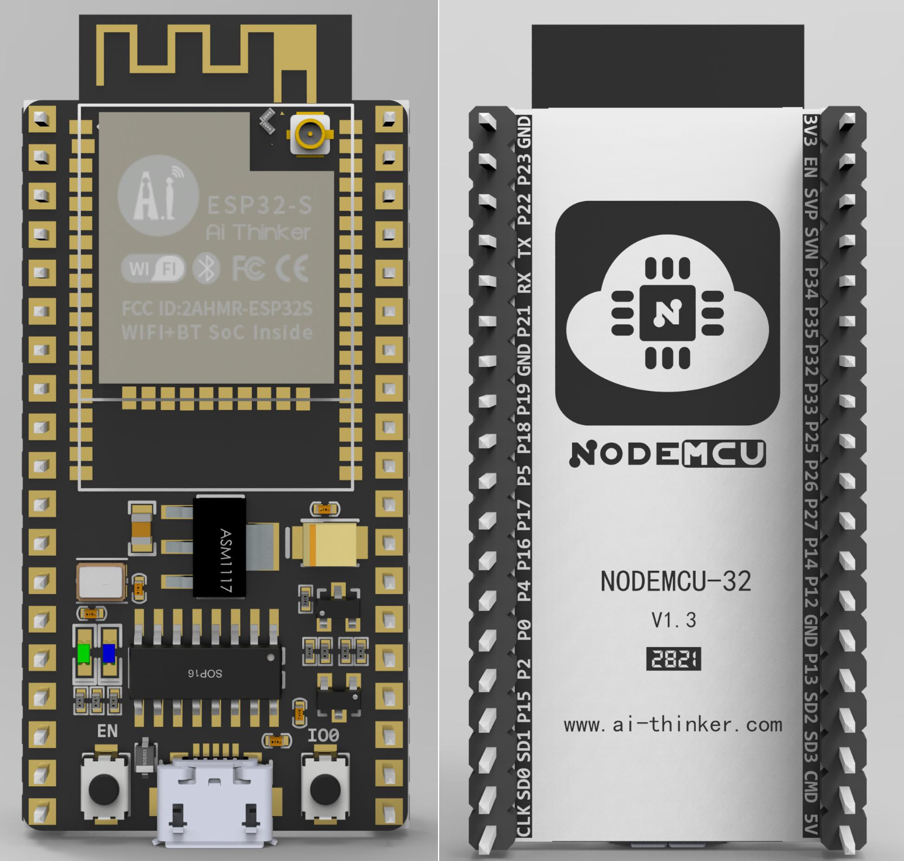
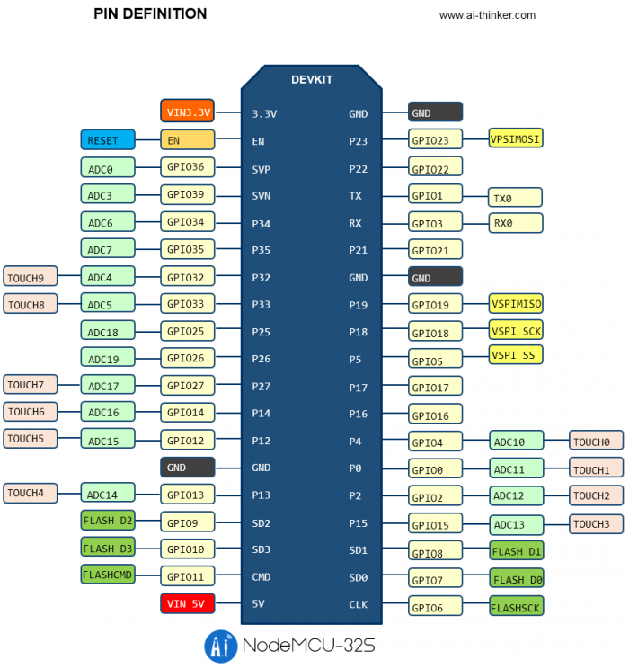
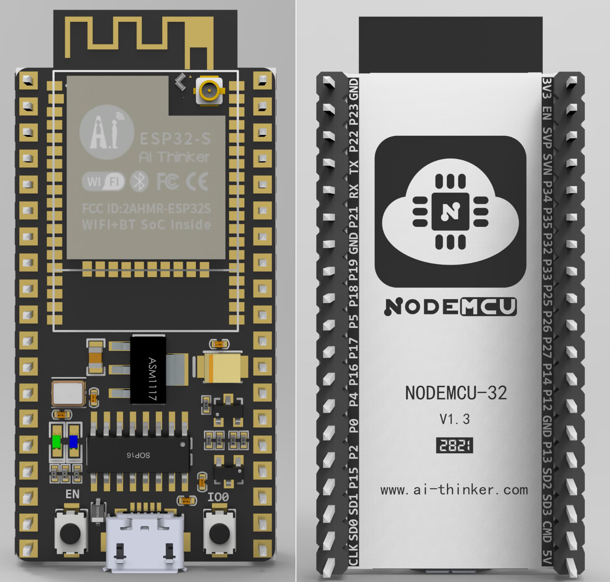
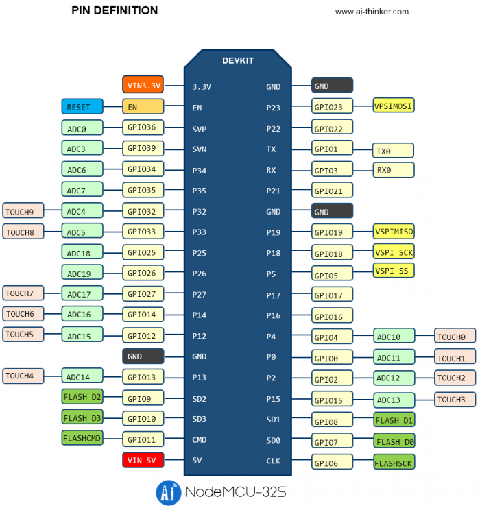

实验6指南¶
警告
本实验指南尚未发布，内容随时可能发生变化。
实验大题框架已确定，如果有实验进度快的，可以参考此指南先行实验，但具体的 TASK 可能会有变化。
## 1 ESP32（42.5分）
ESP32 是一系列低成本，低功耗的单片机微控制器，集成了 Wi-Fi 和双模蓝牙。使用 MicroPython 可以有效利用您的 ESP32 板，反之亦然， ESP32 芯片是使用 MicroPython 的绝佳平台。
### 1.1 固件获取
首先您需要下载最新的MicroPython固件二进制文件以载入您的ESP32设备。您可从 **[MicroPython 下载页面](https://micropython.org/download/?port=esp32)** 下载。也可以点击 **[此链接](https://micropython.org/resources/firmware/esp32-20220618-v1.19.1.bin)** 下载最新的适用于 ESP32 的固件二进制文件。
### 1.2 固件烧录（7.5分）
#### 1.2.1 esptool 安装
我们需要借助 esptool 工具来烧录固件。您可以使用 pip 安装 esptool：
它安装了esptool, pyserial, pyaes, ecdsa和six。
- pyserial: 串口
- pyaes: AES
- ecdsa: ECDSA数字签名
- six: py2和py3的差异消除
`TASK1` ==安装完成后，使用 `esptool.py -h` 显示帮助文档，并截图。==（2.5分）
#### 1.2.2 查看信息
将 ESP32 连接到电脑上，并确定对应的设备号（如 `/dev/tty.SLAB_USBtoUART` ），然后使用 esptool 查看设备信息：
- 查看 `chip_id`：
- 查看 `flash_id`：
`TASK2` ==使用 esptool 查看以上两条设备信息，并将输出结果截图。==（2.5分）
#### 1.2.3 擦除 & 烧录固件
- 擦除：
- 烧录固件：
`TASK3` ==使用 esptool 擦除板上原先存在的固件，并烧录新的固件，并将输出结果截图。==（2.5分）
### 1.3 串口 REPL（10分）
#### 1.3.1 连接
使用串口工具连接 ESP32，会进入 REPL 交互界面，可以通过 Python 语句进行交互。
使用 Picocom 连接的命令如下：
`TASK4` ==使用串口工具连接 ESP32，尝试使用 REPL 运行若干条 Python 语句，并截图。==（2.5分）
#### 1.3.2 连接 Wi-Fi
在 REPL 交互界面中，我们可以使用 `network` 模块连接 Wi-Fi：
`TASK5` ==使用上述代码给 ESP32 连接 Wi-Fi，并给出连接成功的截图（需包括 IP 地址）。==（2.5分）
???+ tip "提示"
由于校网需要使用 Web 进行认证，因此在完成此实验时，建议使用手机热点或其他的 Wi-Fi 进行连接。
ESP32不支持5GHz信道，若使用手机热点，需要注意是否只选用了5GHz，若是，需要切换到2.4GHz，设备才能检测到网络。
#### 1.3.3 控制 LED
在 REPL 交互界面中，我们可以使用 `machine` 模块控制 LED：
`TASK6` ==使用上述代码控制 ESP32 板载 LED 灯，并给出控制成功的截图以及板卡照片。==（2.5分）
#### 1.3.4 远程重启
在 REPL 交互界面中，我们可以使用 `machine` 模块远程重启 ESP32：
`TASK7` ==使用上述代码远程重启 ESP32，并给出重启成功的截图。==（2.5分）
### 1.4 WebREPL（10分）
??? tip "参考资料"
- **[通过WiFi连接到REPL](http://wiki.1zlab.com/wiki/micropython-esp32/webrepl/)**
在某些特定的场合和需求下，你可能想要通过无线的方式接入REPL，设想你正在使用MicroPython 和 ESP32 测试一辆自己制作的小车，但是小车的运行不希望被数据线所牵绊。这个时候，你可能就需要通过 WiFi 接入到 REPL 。
WebREPL 允许你通过 WiFi 使用 MicroPython 的 REPL，通过浏览器连接，使用了WebSockt通信协议。
在MicroPython的网站上托管了WebREPL的单页应用，点击如下链接即可访问：**[WebREPL](http://micropython.org/webrepl)**。
#### 1.4.1 配置并连接 WebREPL
- 连接Wi-Fi
使用 **[1.3.2](#132-连接-wi-fi)** 中的代码连接Wi-Fi，并使用 ifconfig() 查看 IP 地址。
???+ warning "注意"
请保证你的电脑（即之后需要使用的 WebREPL Client）和 ESP32（WebREPL Server）在同一局域网中。
- 配置WebREPL
- 初始化配置
初次使用WebREPL，我们先要使用webrepl_setup模块来进行初始化设置。在REPL中输入如下代码：
按提示设置是否开机自启动WebREPL，设置连接密码（请务必记住），选择是否重启。
> 若选择重启，请在重启后重新连接 Wi-Fi。
- 启动WebREPL
使用以下代码开启 WebREPL：
你可以使用 `webrepl.start(password)` 来设置密码。
启动之后，可以看到如下输出：
其中 `YOUR-IP-ADDRESS` 为你的 ESP32 的 IP 地址。记住此处 ws:// 开头的链接，后面会用到。
- 使用 WebREPL
访问 **[http://micropython.org/webrepl](http://micropython.org/webrepl)** ，在左上角输入刚才的链接，点击 `Connect` 后，在命令行中输入你所设置的密码，即可连接到 ESP32。
!!! warning "注意"
此网址仅支持通过 HTTP 协议访问，使用 HTTPS 会造成无法正常连接。由于现代浏览器大多会默认开启 HSTS，你可以参考 **[完美解决浏览器输入http被自动跳转至https问题](https://zhuanlan.zhihu.com/p/379637201)** 解决自动跳转到 HTTPS 的问题，也可以采取从本地启动 WebREPL client 的方式。
另一种方式是通过 clone **[此仓库](https://github.com/micropython/webrepl)** ，进入 webrepl 文件夹，按照如下指令提示，可以在本地启动 WebREPL Client：
你也可以直接通过打开 `webrepl.html`，和使用在线网址蕾丝的方式进行连接。
成功连接后，WebREPL 和之前使用串口连接的 REPL 体验基本一致。
`TASK8` ==请给出成功连接 WebREPL 后的截图，需要使用若干条 Python 语句进行测试。==（2.5分）
#### 1.4.2 使用 WebREPL 进行文件传输
WebREPL 除了可以进行 REPL 交互之外，还可以进行文件传输。
通过在 REPL 环境中 `import os`，我们可以使用 `os` 模块进行文件操作。包括 `os.listdir()`、`os.remove()`、`os.rename()`、`os.mkdir()`、`os.rmdir()` 等。
如果需要显示文件内容，可以通过 `open()` 函数打开文件，然后使用 `read()` 函数读取文件内容。
`TASK9` ==请使用 `os` 模块查看 ESP32 的文件系统中的文件，并使用 `open()` 函数打开 `boot.py` 文件，使用 `read()` 显示其内容。请给出相关截图。==（2.5分）
有两个文件在ESP32启动时进行特殊处理：`boot.py` 和 `main.py`。`boot.py` 脚本首先执行（若存在）， 此文件结束后即执行 `main.py` 脚本。您可自行创建文件并把你想开机自启动的代码放进去。
WebREPL 可以很方便的进行文件传输，可以通过网页上的提示直接进行图形化的操作，也可以根据之前本地启动 WebREPL Client 的提示进行相应操作。
`TASK10` ==请将 ESP32 上的 `boot.py` 下载到本地，并验证其内容。请给出相关截图。==（2.5分）
`TASK11` ==请使用 WebREPL 上传 `boot.py` 和 `main.py` 文件，要求实现 ESP32 能够开机自动连接 Wi-Fi，并启动让 LED 灯每隔一秒闪烁的程序。请用 TASK9 类似的方式验证文件已成功正确上传。需要给出实现的代码及相应注释，并将验证得到的结果截图。==（2.5分）
???+ warning "注意"
- 不要上传空文件，WebREPL 存在相应的 bug
- 不要传入带中文字符的文件，MicroPython 的文件系统不支持中文字符
### 1.5 mpfshell（5分）
mpfshell 是一个基于 Python 的命令行工具，可以用来与 ESP32 进行交互。它可以用来进行文件传输、执行 Python 脚本、执行 REPL 交互等。
#### 1.5.1 安装 mpfshell
mpfshell 可以通过 pip 进行安装：
#### 1.5.2 Bug Fix
要正常使用 mpfshell，需要在安装之后手动修复一些 bug。
打开 PATH-TO-YOUR-PY-ENV / site-packages / mp / conwebsock.py，找到 `def on_message(self, ws, message):` 和 `def on_error(self, ws, error):`，去掉两个函数参数表中的ws，保存时要输入sudo密码。
- 进入mpfshell: `mpfshell`
- 连接ESP32: `open ws://YOUR-IP-ADDRESS,password` 或者 `open /dev/tty.SLAB_USBtoUART`
- 查看文件: `ls`
- 进入 REPL: `repl` ，按 `Ctrl-]` 退出
- 退出mpfshell: `exit`
- 退出连接: `close`
mpfshell 的详细使用方法可以参考 **[mpfshell 文档](https://wiki.sipeed.com/soft/maixpy/zh/get_started/mpfshell-lite/mpfshell-lite-help.html)** 。
`TASK12` ==请给出成功连接 mpfshell 后的截图，要求使用 `ls` 等命令，并进入 REPL 环境测试。==（5分）
### 1.6 RT-Thread MicroPython 插件（5分）
RT-Thread MicroPython 插件是 RT-Thread 官方提供的一个 MicroPython 插件，支持在 ESP32 上运行 MicroPython，实现 MicroPython 的 REPL 交互、文件传输、网络连接等功能。
以下教程摘录自 **[RT-Thread MicroPython 插件文档](https://marketplace.visualstudio.com/items?itemName=RT-Thread.rt-thread-micropython)** 。
#### 1.6.1 准备工作
##### Windows 支持
1. 在 windows 操作系统下使用插件需要将 vscode 的默认终端修改为 powershell，如下图所示：
 > 如果想要使用 MicroPython 自动补全功能（如果暂时不需要自动补全功能，可以跳过后续步骤），还需要进行如下操作：
2. 安装 Python 插件
3. 按照 Python 插件的提示在 PC 上安装 Python3 并加入到系统环境变量中
> 如果想要使用 MicroPython 自动补全功能（如果暂时不需要自动补全功能，可以跳过后续步骤），还需要进行如下操作：
2. 安装 Python 插件
3. 按照 Python 插件的提示在 PC 上安装 Python3 并加入到系统环境变量中
 > 如果在 PC 上已经安装过上述插件和程序，可以跳过此准备步骤。
##### Ubuntu 支持
本插件支持在 ubuntu 18.04 版本下运行，为了避免在 ubuntu 系统下频繁获取串口权限，需要将当前用户加入到 dialout 用户组中，手动输入如下命令即可，`$USERNAME` 是系统当前用户名：
注意：配置修改后需要 **重启一下操作系统** 使配置生效。
##### Mac 支持
RT-Thread MicroPython 插件支持 Mac 10.15 Catalina 操作系统，直接搜索插件安装即可。
#### 1.6.2 快速上手
##### 创建 MicroPython 工程
MicroPython 开发的第一步是创建 MicroPython 工程，后续所有操作都必须在工程内才能运行。创建一个新的 MicroPython 工程有两种方式，分别是创建一个空白工程和基于 Demo 创建工程，下面展示这两种方式。
##### 创建一个空白 MicroPython 工程
> 如果在 PC 上已经安装过上述插件和程序，可以跳过此准备步骤。
##### Ubuntu 支持
本插件支持在 ubuntu 18.04 版本下运行，为了避免在 ubuntu 系统下频繁获取串口权限，需要将当前用户加入到 dialout 用户组中，手动输入如下命令即可，`$USERNAME` 是系统当前用户名：
注意：配置修改后需要 **重启一下操作系统** 使配置生效。
##### Mac 支持
RT-Thread MicroPython 插件支持 Mac 10.15 Catalina 操作系统，直接搜索插件安装即可。
#### 1.6.2 快速上手
##### 创建 MicroPython 工程
MicroPython 开发的第一步是创建 MicroPython 工程，后续所有操作都必须在工程内才能运行。创建一个新的 MicroPython 工程有两种方式，分别是创建一个空白工程和基于 Demo 创建工程，下面展示这两种方式。
##### 创建一个空白 MicroPython 工程
 ##### 创建一个基于 Demo 的 MicroPython 工程
通过该功能可以创建一个基于 demo 的 MicroPython 工程，开发者可以直接运行该 Demo 工程或者在该 Demo 的基础上实现自己想要的功能。
##### 创建一个基于 Demo 的 MicroPython 工程
通过该功能可以创建一个基于 demo 的 MicroPython 工程，开发者可以直接运行该 Demo 工程或者在该 Demo 的基础上实现自己想要的功能。
 ##### 连接开发板
点击左下角的连接按钮，然后在弹出的设备列表中选择想要连接的设备，即可连接 MicroPython 开发板。
##### 连接开发板
点击左下角的连接按钮，然后在弹出的设备列表中选择想要连接的设备，即可连接 MicroPython 开发板。
 ##### 查看示例代码文件
MicroPython 插件提供丰富的示例代码，可在左侧活动栏中查看示例代码和库文件。右键点击示例文件，在下拉菜单中可以将示例文件添加到工程中。
##### 查看示例代码文件
MicroPython 插件提供丰富的示例代码，可在左侧活动栏中查看示例代码和库文件。右键点击示例文件，在下拉菜单中可以将示例文件添加到工程中。
 ##### 直接在开发板上运行 MicroPython 文件（调试神器）
该功能用于快速调试单个文件，频繁应用在调试代码的过程中。当我们在一个单独的文件中编写测试程序时，使用该功能可以将当前 python 文件下载到开发板的内存中运行，达到快速调试的效果，还可以使用快捷键 `alt + q` 来触发该功能。
##### 直接在开发板上运行 MicroPython 文件（调试神器）
该功能用于快速调试单个文件，频繁应用在调试代码的过程中。当我们在一个单独的文件中编写测试程序时，使用该功能可以将当前 python 文件下载到开发板的内存中运行，达到快速调试的效果，还可以使用快捷键 `alt + q` 来触发该功能。
 ##### 在开发板上运行 MicroPython 代码片段
如果只是想进行代码量不大的代码调试，而不想将文件下载到开发板上，那么可以使用 代码片段 功能。在编辑器中选中想要运行的代码片段，然后在右键下拉菜单中选择 在设备上执行选中的 MicroPython 代码 选项，即可在 REPL 环境中运行所选代码。
##### 在开发板上运行 MicroPython 代码片段
如果只是想进行代码量不大的代码调试，而不想将文件下载到开发板上，那么可以使用 代码片段 功能。在编辑器中选中想要运行的代码片段，然后在右键下拉菜单中选择 在设备上执行选中的 MicroPython 代码 选项，即可在 REPL 环境中运行所选代码。
 ##### 下载文件/文件夹到开发板
如果想要下载单个文件/文件夹到开发板，此时可以使用 **下载单个文件/文件夹到开发板** 的功能。在工程中选中想要下载到开发板上的文件/文件夹，在下拉菜单中使用该功能即可。这里需要注意的是，如果开发板上有同名的文件/文件夹，下载操作将会覆盖这些已有的文件/文件夹。
通过在 repl 中输入 os.listdir() 命令可以查看相应的文件/文件夹是否下载成功，同样在 repl 中还可以使用相应的命令 **删除文件或文件夹** ，命令列表如下所示：
|功能|命令|
|:--:|:--:|
|删除文件|`os.remove("file_to_del")`|
|删除文件夹|`os.rmdir("dir_to_del")`|
##### 下载文件/文件夹到开发板
如果想要下载单个文件/文件夹到开发板，此时可以使用 **下载单个文件/文件夹到开发板** 的功能。在工程中选中想要下载到开发板上的文件/文件夹，在下拉菜单中使用该功能即可。这里需要注意的是，如果开发板上有同名的文件/文件夹，下载操作将会覆盖这些已有的文件/文件夹。
通过在 repl 中输入 os.listdir() 命令可以查看相应的文件/文件夹是否下载成功，同样在 repl 中还可以使用相应的命令 **删除文件或文件夹** ，命令列表如下所示：
|功能|命令|
|:--:|:--:|
|删除文件|`os.remove("file_to_del")`|
|删除文件夹|`os.rmdir("dir_to_del")`|
 ##### 工程同步功能
点击左下角的同步按钮可以启动工程同步功能。通过该功能可将本地工程中所有目录文件，同步到开发板的文件系统中。该功能推荐在代码调试完成后使用，在调试过程中不必频繁同步工程。
工程同步完成后，可以在 DEVICE FILES LIST 栏目中看到 **设备中的文件列表** 。
##### 工程同步功能
点击左下角的同步按钮可以启动工程同步功能。通过该功能可将本地工程中所有目录文件，同步到开发板的文件系统中。该功能推荐在代码调试完成后使用，在调试过程中不必频繁同步工程。
工程同步完成后，可以在 DEVICE FILES LIST 栏目中看到 **设备中的文件列表** 。
 ##### 基于 MicroPython 的代码智能补全
本插件支持基于 MicroPython 语法的代码智能补全和语法检查，这一强大功能对于开发 MicroPython 代码十分实用。它可以让开发者在编写函数的同时查看 API 参数提示，同时它给出的醒目提示也让开发者更易于查找代码中的错误。
##### 基于 MicroPython 的代码智能补全
本插件支持基于 MicroPython 语法的代码智能补全和语法检查，这一强大功能对于开发 MicroPython 代码十分实用。它可以让开发者在编写函数的同时查看 API 参数提示，同时它给出的醒目提示也让开发者更易于查找代码中的错误。
 ???+ warning "注意"
不要删除工程目录下的 .mpyproject.json 文件，该文件是 MicroPython 工程的配置文件，删除后将无法正常运行 MicroPython 代码程序。
`TASK13` ==请使用此插件实现 ESP32 开机自动连接 Wi-Fi，并让 LED 灯每隔一秒闪烁的程序。（即 TASK11 所实现的工程），并给出你所使用插件界面截图，需要包括工程文件的层级结构以及 VSCode 终端中的 REPL 界面。==（5分）
在之后的实验过程中，你可以选择以上任意一种你习惯的编程/运行方式来进行 ESP32 的开发。
### 1.7 使用 DHT-11 测量温湿度（5分）
在 Lab5 中，我们已经使用过 DHT-11 来进行温湿度的测量。在此实验中，我们无需像之前一样手动发送信号，只需要使用 MicroPython 的库函数 `dht` 即可。
DHT-11 的连线和 Lab5 类似，仅将上位机从 103 板更改为 ESP32，此处不再赘述。
本实验中我们使用的 ESP32 开发板为安信可的 NodeMCU ESP32-S，其引脚图如下所示：


对于引脚更加详细的介绍，可以参考 **[NodeMCU-32_V1.3规格书](https://docs.ai-thinker.com/_media/esp32/docs/nodemcu-32_v1.3%E8%A7%84%E6%A0%BC%E4%B9%A6_-.pdf)**
MicroPython 中的 DHT 模块用于读取 DHT11 和 DHT22 温湿度传感器的数据。该模块的使用方法如下：
其中，`temperature()` 返回的值单位为摄氏度，而自 `humidity()` 返回的值为相对湿度的百分比。
需要注意，DHT11 只能以最快每秒1次的频率调用。
`TASK14` ==请使用 DHT 模块实现 ESP32 每秒读取 DHT-11 的温湿度，并直接 print 输出。请给出实现的代码和注释，并给出 **远程登录** （此处不允许使用串口 REPL）查看的截图。==（5分）
## 2 嵌入式 Linux（30分）
本次实验所使用的开发板为 ROC-RK3568-PC SE（后续简称3568板），可从 **[产品规格书](https://download.t-firefly.com/%E4%BA%A7%E5%93%81%E8%A7%84%E6%A0%BC%E6%96%87%E6%A1%A3/%E5%BC%80%E6%BA%90%E4%B8%BB%E6%9D%BF/ROC-RK3568-PC%20SE%20-%20%E5%9B%9B%E6%A0%B864%E4%BD%8D%E5%BC%80%E6%BA%90%E4%B8%BB%E6%9D%BF%20-%20%E4%BA%A7%E5%93%81%E4%BB%8B%E7%BB%8D.pdf)** 中查看板子的具体信息。
3568板支持 Android, Debian, Ubuntu, Buildroot 等操作系统。其出厂默认安装 Android 操作系统。本实验中需要使用嵌入式 Linux 系统，因此需要更新固件。推荐使用 Ubuntu 操作系统。
### 2.1 更新固件（5分）
可以前往 **[资料下载](https://www.t-firefly.com/doc/download/180.html)** 页面进行固件下载。此处建议下载 **[Ubuntu 固件](https://pan.baidu.com/s/15AUMuzDXEQZnXIdBr81mFA?pwd=1234#list/path=%2F)** （提取码 1234）。
> 官网上给出的 Ubuntu 固件下载的链接有且仅有百度网盘…… 为了避免不必要的资金损失或不必要的血压升高，我将固件上传到了 **[浙大云盘](https://pan.zju.edu.cn/share/7685f4da8b516dbaac69f08297)** （提取码 2023ebd），可以选择在浙大云盘下载。
下载完成并解压后的目录结构如下：
其中 `img` 格式的文件为固件镜像文件，`tools` 文件夹中包含了固件升级工具，可以根据自己的系统选择合适的工具。
ROC-RK3568-PC-SE 有2种工作模式。一般情况下，开机直接进入Normal 模式正常启动系统。如需对板子系统进行升级，可以根据情况选择合适的升级模式进行固件升级。对不同模式的介绍见 **[更新固件介绍](https://wiki.t-firefly.com/zh_CN/ROC-RK3568-PC-SE/01-bootmode.html)** 。此处推荐使用 **[Loader 升级模式](https://wiki.t-firefly.com/zh_CN/ROC-RK3568-PC-SE/loader_mode.html)** 进行固件升级。
对于 Windows 用户，请参考 **[Windows 上升级固件](https://wiki.t-firefly.com/zh_CN/ROC-RK3568-PC-SE/Windows_upgrade_firmware.html)** ，使用 `RKDevTool` 工具进行固件升级。
对于 Linux 用户或者 MacOS 用户，请参考 **[Linux 上升级固件](https://wiki.t-firefly.com/zh_CN/ROC-RK3568-PC-SE/Linux_upgrade_firmware.html)** ，使用 `upgrade_tool` 进行固件升级。
> 注意，适用于 MacOS 的 `upgrade_tool` 在官网的下载界面没有单独给出，但在打包下载镜像文件时会一并下载。如果你使用 MacOS 系统，请在 `tools/mac` 文件夹中找到 `upgrade_tool` 工具。使用方法和 Linux 下的 `upgrade_tool` 相同。
成功升级固件后，可以通过串口或者 HDMI 接口外接显示器开机后查看相关信息。使用串口调试的方式请见 **[2.2 串口调试](#22-串口调试)** 。
`TASK15` ==请参考以上方式升级固件为 Linux 系统。请给出 **成功烧录固件** 时上位机相关截图（或者选用 SD 卡升级则放置成功烧写 SD 卡的相关截图）以及运行后在终端中 **查看内核版本和发行版本信息** 的截图==（5分）
> 未配备显示器的同学请在 [2.2 串口调试](#22-串口调试) 中查看如何进行串口调试，成功后可继续完成 TASK15。
### 2.2 串口调试（5分）
若自己没有显示器，可以通过串口调试的方法为板子进行开发配置，再通过 ssh 或者 vnc 等方式进行远程连接开发。以下介绍串口调试的方法。
> 有配备显示器的同学仍需进行串口调试，因为其对于检查系统启动日志非常有用。
以下教程参考自 **[串口调试](https://wiki.t-firefly.com/zh_CN/ROC-RK3568-PC-SE/debug.html)** 。
#### 2.2.1 选择适配器
| 串口 | 最高波特率 | 是否推荐 | 评价 |
| :----: | :----: | :----: | : ----: |
| CP2104 | 2Mbps | 推荐 | 支持高波特率通信，稳定性好耐用 |
| CH340 | 2Mbps | 不推荐 | firefly和许多客户在实际使用中发现，市面上很多CH340的实际波特率达不到1.5Mbps，这给开发过程造成很多麻烦 |
| PL2303 | 1.2Mbps | 不推荐 | 最高波特率达不到1.5Mbps |
> 注意： ROC-RK3568-PC-SE 默认的波特率是 1500000，有些USB转串口芯片波特率无法达到 1500000，同一芯片的不同系列也可能会有差异，所以在选购之前一定要确认是否支持。
此处我们使用的是 CP2104 芯片的 USB 转串口适配器（在开发板套件盒中有）。你也可以使用之前实验中的 CP2102 芯片的 USB 转串口适配器，但是需要注意其波特率是否支持 1500000。
#### 2.2.2 硬件连接
串口转 USB 适配器，有四个引脚：
- 3.3V 电源（NC），不需要连接
- GND，串口的地线，接开发板串口的 GND 针
- TXD，串口的输出线，接开发板串口的 TX 针
- RXD，串口的输入线，接开发板串口的 RX 针
注意： 如使用其它串口适配器遇到 TX 和 RX 不能输入和输出的问题，可以尝试对调 TX 和 RX 的连接。
ROC-RK3568-PC-SE 串口连接图：
???+ warning "注意"
不要删除工程目录下的 .mpyproject.json 文件，该文件是 MicroPython 工程的配置文件，删除后将无法正常运行 MicroPython 代码程序。
`TASK13` ==请使用此插件实现 ESP32 开机自动连接 Wi-Fi，并让 LED 灯每隔一秒闪烁的程序。（即 TASK11 所实现的工程），并给出你所使用插件界面截图，需要包括工程文件的层级结构以及 VSCode 终端中的 REPL 界面。==（5分）
在之后的实验过程中，你可以选择以上任意一种你习惯的编程/运行方式来进行 ESP32 的开发。
### 1.7 使用 DHT-11 测量温湿度（5分）
在 Lab5 中，我们已经使用过 DHT-11 来进行温湿度的测量。在此实验中，我们无需像之前一样手动发送信号，只需要使用 MicroPython 的库函数 `dht` 即可。
DHT-11 的连线和 Lab5 类似，仅将上位机从 103 板更改为 ESP32，此处不再赘述。
本实验中我们使用的 ESP32 开发板为安信可的 NodeMCU ESP32-S，其引脚图如下所示：


对于引脚更加详细的介绍，可以参考 **[NodeMCU-32_V1.3规格书](https://docs.ai-thinker.com/_media/esp32/docs/nodemcu-32_v1.3%E8%A7%84%E6%A0%BC%E4%B9%A6_-.pdf)**
MicroPython 中的 DHT 模块用于读取 DHT11 和 DHT22 温湿度传感器的数据。该模块的使用方法如下：
其中，`temperature()` 返回的值单位为摄氏度，而自 `humidity()` 返回的值为相对湿度的百分比。
需要注意，DHT11 只能以最快每秒1次的频率调用。
`TASK14` ==请使用 DHT 模块实现 ESP32 每秒读取 DHT-11 的温湿度，并直接 print 输出。请给出实现的代码和注释，并给出 **远程登录** （此处不允许使用串口 REPL）查看的截图。==（5分）
## 2 嵌入式 Linux（30分）
本次实验所使用的开发板为 ROC-RK3568-PC SE（后续简称3568板），可从 **[产品规格书](https://download.t-firefly.com/%E4%BA%A7%E5%93%81%E8%A7%84%E6%A0%BC%E6%96%87%E6%A1%A3/%E5%BC%80%E6%BA%90%E4%B8%BB%E6%9D%BF/ROC-RK3568-PC%20SE%20-%20%E5%9B%9B%E6%A0%B864%E4%BD%8D%E5%BC%80%E6%BA%90%E4%B8%BB%E6%9D%BF%20-%20%E4%BA%A7%E5%93%81%E4%BB%8B%E7%BB%8D.pdf)** 中查看板子的具体信息。
3568板支持 Android, Debian, Ubuntu, Buildroot 等操作系统。其出厂默认安装 Android 操作系统。本实验中需要使用嵌入式 Linux 系统，因此需要更新固件。推荐使用 Ubuntu 操作系统。
### 2.1 更新固件（5分）
可以前往 **[资料下载](https://www.t-firefly.com/doc/download/180.html)** 页面进行固件下载。此处建议下载 **[Ubuntu 固件](https://pan.baidu.com/s/15AUMuzDXEQZnXIdBr81mFA?pwd=1234#list/path=%2F)** （提取码 1234）。
> 官网上给出的 Ubuntu 固件下载的链接有且仅有百度网盘…… 为了避免不必要的资金损失或不必要的血压升高，我将固件上传到了 **[浙大云盘](https://pan.zju.edu.cn/share/7685f4da8b516dbaac69f08297)** （提取码 2023ebd），可以选择在浙大云盘下载。
下载完成并解压后的目录结构如下：
其中 `img` 格式的文件为固件镜像文件，`tools` 文件夹中包含了固件升级工具，可以根据自己的系统选择合适的工具。
ROC-RK3568-PC-SE 有2种工作模式。一般情况下，开机直接进入Normal 模式正常启动系统。如需对板子系统进行升级，可以根据情况选择合适的升级模式进行固件升级。对不同模式的介绍见 **[更新固件介绍](https://wiki.t-firefly.com/zh_CN/ROC-RK3568-PC-SE/01-bootmode.html)** 。此处推荐使用 **[Loader 升级模式](https://wiki.t-firefly.com/zh_CN/ROC-RK3568-PC-SE/loader_mode.html)** 进行固件升级。
对于 Windows 用户，请参考 **[Windows 上升级固件](https://wiki.t-firefly.com/zh_CN/ROC-RK3568-PC-SE/Windows_upgrade_firmware.html)** ，使用 `RKDevTool` 工具进行固件升级。
对于 Linux 用户或者 MacOS 用户，请参考 **[Linux 上升级固件](https://wiki.t-firefly.com/zh_CN/ROC-RK3568-PC-SE/Linux_upgrade_firmware.html)** ，使用 `upgrade_tool` 进行固件升级。
> 注意，适用于 MacOS 的 `upgrade_tool` 在官网的下载界面没有单独给出，但在打包下载镜像文件时会一并下载。如果你使用 MacOS 系统，请在 `tools/mac` 文件夹中找到 `upgrade_tool` 工具。使用方法和 Linux 下的 `upgrade_tool` 相同。
成功升级固件后，可以通过串口或者 HDMI 接口外接显示器开机后查看相关信息。使用串口调试的方式请见 **[2.2 串口调试](#22-串口调试)** 。
`TASK15` ==请参考以上方式升级固件为 Linux 系统。请给出 **成功烧录固件** 时上位机相关截图（或者选用 SD 卡升级则放置成功烧写 SD 卡的相关截图）以及运行后在终端中 **查看内核版本和发行版本信息** 的截图==（5分）
> 未配备显示器的同学请在 [2.2 串口调试](#22-串口调试) 中查看如何进行串口调试，成功后可继续完成 TASK15。
### 2.2 串口调试（5分）
若自己没有显示器，可以通过串口调试的方法为板子进行开发配置，再通过 ssh 或者 vnc 等方式进行远程连接开发。以下介绍串口调试的方法。
> 有配备显示器的同学仍需进行串口调试，因为其对于检查系统启动日志非常有用。
以下教程参考自 **[串口调试](https://wiki.t-firefly.com/zh_CN/ROC-RK3568-PC-SE/debug.html)** 。
#### 2.2.1 选择适配器
| 串口 | 最高波特率 | 是否推荐 | 评价 |
| :----: | :----: | :----: | : ----: |
| CP2104 | 2Mbps | 推荐 | 支持高波特率通信，稳定性好耐用 |
| CH340 | 2Mbps | 不推荐 | firefly和许多客户在实际使用中发现，市面上很多CH340的实际波特率达不到1.5Mbps，这给开发过程造成很多麻烦 |
| PL2303 | 1.2Mbps | 不推荐 | 最高波特率达不到1.5Mbps |
> 注意： ROC-RK3568-PC-SE 默认的波特率是 1500000，有些USB转串口芯片波特率无法达到 1500000，同一芯片的不同系列也可能会有差异，所以在选购之前一定要确认是否支持。
此处我们使用的是 CP2104 芯片的 USB 转串口适配器（在开发板套件盒中有）。你也可以使用之前实验中的 CP2102 芯片的 USB 转串口适配器，但是需要注意其波特率是否支持 1500000。
#### 2.2.2 硬件连接
串口转 USB 适配器，有四个引脚：
- 3.3V 电源（NC），不需要连接
- GND，串口的地线，接开发板串口的 GND 针
- TXD，串口的输出线，接开发板串口的 TX 针
- RXD，串口的输入线，接开发板串口的 RX 针
注意： 如使用其它串口适配器遇到 TX 和 RX 不能输入和输出的问题，可以尝试对调 TX 和 RX 的连接。
ROC-RK3568-PC-SE 串口连接图：
 #### 2.2.3 串口参数配置
ROC-RK3568-PC-SE 使用以下串口参数：
- 波特率：1500000
- 数据位：8
- 停止位：1
- 奇偶校验：无
- 流控：无
之后的步骤和 Lab2 中使用串口的方式基本相同，CP210x 的驱动在之前的实验中已经安装过了，这里不再赘述。
`TASK16` ==请给出上电启动时串口输出的 **日志信息截图** ，并在串口连接的终端中使用若干命令进行 **测试并截图** 。同时需要附上 **实际连接** 的照片（要求同时拍摄到 **板子上的连线** 以及你所使用的上位机的打开着串口终端软件的 **屏幕** ）==（5分）
### 2.3 开发环境配置（20分）
为方便开发环境配置，请先行使用 Wi-Fi 或者以太网使开发板联网。
#### 2.3.1 多种语言开发环境
`TASK17` ==请在 3568 板上安装 **Python** 、 **C/C++** 和 **Java** 三种语言的开发环境，在终端中使用命令查看他们的版本并截图。同时请为三种语言各写一个简易的程序，在终端中成功运行并截图。==（5分）
#### 2.3.2 SSH 远程连接
SSH 的全称是 Secure Shell。可以通过其对远程主机进行安全的访问。对于 SSH 协议有很多的实现。而最常用的开源实现为 OpenSSH。在 Ubuntu 中，可以通过以下命令安装 OpenSSH Server：
安装完成后，可以通过以下命令查看 OpenSSH Server 的状态：
如果显示为 `Active: active (running)`，则说明 OpenSSH Server 已经成功运行。
否则则可通过以下命令启动 OpenSSH Server：
`TASK18` ==请在 3568 板上安装 SSH Server，配置正确后，从PC通过SSH登陆板卡，要求配置好密钥，实现 **免密登陆** 。请给出成功登陆的截图。==（5分）
`TASK19` ==请用终端命令，查看多个不同端口的登陆（本机键盘/屏幕、串口和SSH等）同时在线的情况，并运用 Linux 的 write 来互相通信。请给出截图，并附上相应的文字说明。==（5分）
#### 2.3.3 图形桌面远程连接
尝试一种从PC远程访问板卡图形桌面的方式：x-window（通过SSH）、RDP或VNC。
`TASK20` ==请在 3568 板上安装图形桌面远程连接服务，配置正确后，从PC远程连接登陆板卡，能够正确显示图形界面。请给出成功登陆的截图。==（5分）
## 3 MQTT（20分）
MQTT 是一种基于发布/订阅（publish/subscribe）模式的轻量级通信协议，该协议构建于 TCP/IP 协议之上，专门针对低带宽和不稳定网络环境设计，可以以极少的代码和有限的带宽，为连接远程设备提供实时可靠的消息服务。这些特点使得 MQTT 协议在物联网场景中被广泛应用。
在本实验中，我们需要在嵌入式Linux上编译安装MQTT服务器（broker）；下载上传micoPython的MQTT库，订阅在broker上，定时发送温度湿度消息；用手机/PC上的MQTT终端软件（如iOS上的MQTTAnalyzer）查看实时数据。
在本次实验中，我们可以不必了解 MQTT 协议报文的具体格式，只需要了解其基本的工作原理即可。
### 3.1 MQTT 工作原理
> 以下内容摘录自 [MQTT入门介绍](https://www.runoob.com/w3cnote/mqtt-intro.html)
#### 3.1.1 MQTT协议实现方式
实现MQTT协议需要客户端和服务器端通讯完成，在通讯过程中，MQTT协议中有三种身份：发布者（Publish）、代理（Broker）（服务器）、订阅者（Subscribe）。其中，消息的发布者和订阅者都是客户端，消息代理是服务器，消息发布者可以同时是订阅者。
MQTT传输的消息分为：主题（Topic）和负载（payload）两部分：
- Topic: 可以理解为消息的类型，订阅者订阅（Subscribe）后，就会收到该主题的消息内容（payload）；
- payload: 可以理解为消息的内容，是指订阅者具体要使用的内容。
#### 3.1.2 网络传输与应用消息
MQTT会构建底层网络传输：它将建立客户端到服务器的连接，提供两者之间的一个有序的、无损的、基于字节流的双向传输。
当应用数据通过MQTT网络发送时，MQTT会把与之相关的服务质量（QoS）和主题名（Topic）相关联。
#### 3.1.3 MQTT客户端
一个使用MQTT协议的应用程序或者设备，它总是建立到服务器的网络连接。客户端可以：
- 发布其他客户端可能会订阅的信息；
- 订阅其它客户端发布的消息；
- 退订或删除应用程序的消息；
- 断开与服务器连接。
#### 3.1.4 MQTT服务器
MQTT服务器以称为"消息代理"（Broker），可以是一个应用程序或一台设备。它是位于消息发布者和订阅者之间，它可以：
- 接受来自客户的网络连接；
- 接受客户发布的应用信息；
- 处理来自客户端的订阅和退订请求；
- 向订阅的客户转发应用程序消息。
#### 3.1.5 MQTT协议中的订阅、主题、会话
##### 订阅（Subscription）
订阅包含主题筛选器（Topic Filter）和最大服务质量（QoS）。订阅会与一个会话（Session）关联。一个会话可以包含多个订阅。每一个会话中的每个订阅都有一个不同的主题筛选器。
##### 会话（Session）
每个客户端与服务器建立连接后就是一个会话，客户端和服务器之间有状态交互。会话存在于一个网络之间，也可能在客户端和服务器之间跨越多个连续的网络连接。
##### 主题名（Topic Name）
连接到一个应用程序消息的标签，该标签与服务器的订阅相匹配。服务器会将消息发送给订阅所匹配标签的每个客户端。
##### 主题筛选器（Topic Filter）
一个对主题名通配符筛选器，在订阅表达式中使用，表示订阅所匹配到的多个主题。
##### 负载（Payload）
消息订阅者所具体接收的内容。
#### 3.1.6 MQTT协议中的方法
MQTT协议中定义了一些方法（也被称为动作），来于表示对确定资源所进行操作。这个资源可以代表预先存在的数据或动态生成数据，这取决于服务器的实现。通常来说，资源指服务器上的文件或输出。主要方法有：
- Connect。等待与服务器建立连接。
- Disconnect。等待MQTT客户端完成所做的工作，并与服务器断开TCP/IP会话。
- Subscribe。等待完成订阅。
- UnSubscribe。等待服务器取消客户端的一个或多个topics订阅。
- Publish。MQTT客户端发送消息请求，发送完成后返回应用程序线程。
### 3.2 在嵌入式 Linux 上部署 MQTT Broker（5分）
物联网行业里可选的 MQTT Broker 有很多，此处推荐使用 [EMQX](https://www.emqx.io) 或者 [Mosquitto](https://mosquitto.org)。
#### 3.2.1 EMQX
EMQ X 基于 Erlang/OTP 平台开发，是开源社区中最流行的 MQTT 消息服务器。除了 MQTT 协议之外，EMQ X 还支持 MQTT-SN、CoAP、LwM2M、STOMP 等协议。
- 项目官网：[https://www.emqx.io](https://www.emqx.io)
- GitHub 仓库：[https://github.com/emqx/emqx](https://github.com/emqx/emqx)
- 官方文档：[https://www.emqx.io/docs/zh/v5.0/](https://www.emqx.io/docs/zh/v5.0/)
#### 3.2.2 Mosquitto
Mosquitto 是一款开源的 MQTT 消息代理（服务器）软件，由 Eclipse 基金会主导开发，采用 EPL（Eclipse Public License 2.0）和 EDL（Eclipse Distribution License 1.0）双重许可。
- 项目官网：[https://mosquitto.org](https://mosquitto.org)
- GitHub 仓库：[https://github.com/eclipse/mosquitto](https://github.com/eclipse/mosquitto)
- 官方文档：[https://mosquitto.org/documentation/](https://mosquitto.org/documentation/)
`TASK21` ==请在嵌入式 Linux 上部署 MQTT Broker（选择任一即可），并给出成功部署后相关截图（如终端运行截图、Web 管理界面截图等）==（5分）
### 3.3 MQTT终端软件（5分）
MQTT 终端软件可以用于测试 MQTT 服务器的连接，以及发布和订阅消息。推荐使用 [MQTT X](https://mqttx.app) 、 [MQTT Analyzer](https://apps.apple.com/us/app/mqttanalyzer/id1493015317) 或 [MQTT Client](https://apkpure.com/mqtt-client/in.dc297.mqttclpro)。
#### 3.3.1 MQTT X
- 支持平台：Windows、MacOS、Linux、Web（Web端仅支持 MQTT over WS/WSS，不支持 MQTT over TCP/TLS）
- 下载地址：[https://mqttx.app](https://mqttx.app)
#### 3.3.2 MQTT Analyzer
- 支持平台：iOS、iPadOS、MacOS
- 下载地址：[https://apps.apple.com/us/app/mqttanalyzer/id1493015317](https://apps.apple.com/us/app/mqttanalyzer/id1493015317)
#### 3.3.3 MQTT Client
- 支持平台：Android
- 下载地址：[https://apkpure.com/mqtt-client/in.dc297.mqttclpro](https://apkpure.com/mqtt-client/in.dc297.mqttclpro)
`TASK22` ==请在至少两个设备（如 PC 和手机）的 MQTT 终端软件中连接到使用嵌入式 Linux 部署的 MQTT Broker，并给出成功连接后相关截图。同时用不同设备在某主题上订阅、发送消息来进行测试，请给出截图和相关说明。==（5分）
### 3.4 MicroPython 的 MQTT 库（10分）
#### 3.4.1 安装
此处推荐使用 [micropython-umqtt.simple](https://pypi.org/project/micropython-umqtt.simple/)。umqtt 是 MicroPython 的一个简单的 MQTT 客户端实现，支持发布和订阅消息。但他不支持 CPython。
可以在 MicroPython 的 REPL 中使用如下命令来安装 umqtt：
> 若使用的 MicroPython 版本为 v1.20 及以上版本，可能需要用 `mip` 代替 `upip`。
#### 3.4.2 测试代码
可参考如下测试代码，将之前的 DHT11 传感器数据发布到 MQTT Broker 上：
`TASK23` ==请参考上述代码，并结合之前所完成的读取 DHT-11 数据的工作，完成一个定时（如每隔5秒）向 MQTT Broker 发送温湿度数据的工程，并将其部署到 ESP32 上。请在下方给出完整的源代码，要求有详细注释，并对关键部分单独做出解释。==（5分）
`TASK24` ==请用手机/ PC 上的 MQTT 终端软件连接 MQTT Broker ，查看实时数据，并给出截图。==（5分）
#### 2.2.3 串口参数配置
ROC-RK3568-PC-SE 使用以下串口参数：
- 波特率：1500000
- 数据位：8
- 停止位：1
- 奇偶校验：无
- 流控：无
之后的步骤和 Lab2 中使用串口的方式基本相同，CP210x 的驱动在之前的实验中已经安装过了，这里不再赘述。
`TASK16` ==请给出上电启动时串口输出的 **日志信息截图** ，并在串口连接的终端中使用若干命令进行 **测试并截图** 。同时需要附上 **实际连接** 的照片（要求同时拍摄到 **板子上的连线** 以及你所使用的上位机的打开着串口终端软件的 **屏幕** ）==（5分）
### 2.3 开发环境配置（20分）
为方便开发环境配置，请先行使用 Wi-Fi 或者以太网使开发板联网。
#### 2.3.1 多种语言开发环境
`TASK17` ==请在 3568 板上安装 **Python** 、 **C/C++** 和 **Java** 三种语言的开发环境，在终端中使用命令查看他们的版本并截图。同时请为三种语言各写一个简易的程序，在终端中成功运行并截图。==（5分）
#### 2.3.2 SSH 远程连接
SSH 的全称是 Secure Shell。可以通过其对远程主机进行安全的访问。对于 SSH 协议有很多的实现。而最常用的开源实现为 OpenSSH。在 Ubuntu 中，可以通过以下命令安装 OpenSSH Server：
安装完成后，可以通过以下命令查看 OpenSSH Server 的状态：
如果显示为 `Active: active (running)`，则说明 OpenSSH Server 已经成功运行。
否则则可通过以下命令启动 OpenSSH Server：
`TASK18` ==请在 3568 板上安装 SSH Server，配置正确后，从PC通过SSH登陆板卡，要求配置好密钥，实现 **免密登陆** 。请给出成功登陆的截图。==（5分）
`TASK19` ==请用终端命令，查看多个不同端口的登陆（本机键盘/屏幕、串口和SSH等）同时在线的情况，并运用 Linux 的 write 来互相通信。请给出截图，并附上相应的文字说明。==（5分）
#### 2.3.3 图形桌面远程连接
尝试一种从PC远程访问板卡图形桌面的方式：x-window（通过SSH）、RDP或VNC。
`TASK20` ==请在 3568 板上安装图形桌面远程连接服务，配置正确后，从PC远程连接登陆板卡，能够正确显示图形界面。请给出成功登陆的截图。==（5分）
## 3 MQTT（20分）
MQTT 是一种基于发布/订阅（publish/subscribe）模式的轻量级通信协议，该协议构建于 TCP/IP 协议之上，专门针对低带宽和不稳定网络环境设计，可以以极少的代码和有限的带宽，为连接远程设备提供实时可靠的消息服务。这些特点使得 MQTT 协议在物联网场景中被广泛应用。
在本实验中，我们需要在嵌入式Linux上编译安装MQTT服务器（broker）；下载上传micoPython的MQTT库，订阅在broker上，定时发送温度湿度消息；用手机/PC上的MQTT终端软件（如iOS上的MQTTAnalyzer）查看实时数据。
在本次实验中，我们可以不必了解 MQTT 协议报文的具体格式，只需要了解其基本的工作原理即可。
### 3.1 MQTT 工作原理
> 以下内容摘录自 [MQTT入门介绍](https://www.runoob.com/w3cnote/mqtt-intro.html)
#### 3.1.1 MQTT协议实现方式
实现MQTT协议需要客户端和服务器端通讯完成，在通讯过程中，MQTT协议中有三种身份：发布者（Publish）、代理（Broker）（服务器）、订阅者（Subscribe）。其中，消息的发布者和订阅者都是客户端，消息代理是服务器，消息发布者可以同时是订阅者。
MQTT传输的消息分为：主题（Topic）和负载（payload）两部分：
- Topic: 可以理解为消息的类型，订阅者订阅（Subscribe）后，就会收到该主题的消息内容（payload）；
- payload: 可以理解为消息的内容，是指订阅者具体要使用的内容。
#### 3.1.2 网络传输与应用消息
MQTT会构建底层网络传输：它将建立客户端到服务器的连接，提供两者之间的一个有序的、无损的、基于字节流的双向传输。
当应用数据通过MQTT网络发送时，MQTT会把与之相关的服务质量（QoS）和主题名（Topic）相关联。
#### 3.1.3 MQTT客户端
一个使用MQTT协议的应用程序或者设备，它总是建立到服务器的网络连接。客户端可以：
- 发布其他客户端可能会订阅的信息；
- 订阅其它客户端发布的消息；
- 退订或删除应用程序的消息；
- 断开与服务器连接。
#### 3.1.4 MQTT服务器
MQTT服务器以称为"消息代理"（Broker），可以是一个应用程序或一台设备。它是位于消息发布者和订阅者之间，它可以：
- 接受来自客户的网络连接；
- 接受客户发布的应用信息；
- 处理来自客户端的订阅和退订请求；
- 向订阅的客户转发应用程序消息。
#### 3.1.5 MQTT协议中的订阅、主题、会话
##### 订阅（Subscription）
订阅包含主题筛选器（Topic Filter）和最大服务质量（QoS）。订阅会与一个会话（Session）关联。一个会话可以包含多个订阅。每一个会话中的每个订阅都有一个不同的主题筛选器。
##### 会话（Session）
每个客户端与服务器建立连接后就是一个会话，客户端和服务器之间有状态交互。会话存在于一个网络之间，也可能在客户端和服务器之间跨越多个连续的网络连接。
##### 主题名（Topic Name）
连接到一个应用程序消息的标签，该标签与服务器的订阅相匹配。服务器会将消息发送给订阅所匹配标签的每个客户端。
##### 主题筛选器（Topic Filter）
一个对主题名通配符筛选器，在订阅表达式中使用，表示订阅所匹配到的多个主题。
##### 负载（Payload）
消息订阅者所具体接收的内容。
#### 3.1.6 MQTT协议中的方法
MQTT协议中定义了一些方法（也被称为动作），来于表示对确定资源所进行操作。这个资源可以代表预先存在的数据或动态生成数据，这取决于服务器的实现。通常来说，资源指服务器上的文件或输出。主要方法有：
- Connect。等待与服务器建立连接。
- Disconnect。等待MQTT客户端完成所做的工作，并与服务器断开TCP/IP会话。
- Subscribe。等待完成订阅。
- UnSubscribe。等待服务器取消客户端的一个或多个topics订阅。
- Publish。MQTT客户端发送消息请求，发送完成后返回应用程序线程。
### 3.2 在嵌入式 Linux 上部署 MQTT Broker（5分）
物联网行业里可选的 MQTT Broker 有很多，此处推荐使用 [EMQX](https://www.emqx.io) 或者 [Mosquitto](https://mosquitto.org)。
#### 3.2.1 EMQX
EMQ X 基于 Erlang/OTP 平台开发，是开源社区中最流行的 MQTT 消息服务器。除了 MQTT 协议之外，EMQ X 还支持 MQTT-SN、CoAP、LwM2M、STOMP 等协议。
- 项目官网：[https://www.emqx.io](https://www.emqx.io)
- GitHub 仓库：[https://github.com/emqx/emqx](https://github.com/emqx/emqx)
- 官方文档：[https://www.emqx.io/docs/zh/v5.0/](https://www.emqx.io/docs/zh/v5.0/)
#### 3.2.2 Mosquitto
Mosquitto 是一款开源的 MQTT 消息代理（服务器）软件，由 Eclipse 基金会主导开发，采用 EPL（Eclipse Public License 2.0）和 EDL（Eclipse Distribution License 1.0）双重许可。
- 项目官网：[https://mosquitto.org](https://mosquitto.org)
- GitHub 仓库：[https://github.com/eclipse/mosquitto](https://github.com/eclipse/mosquitto)
- 官方文档：[https://mosquitto.org/documentation/](https://mosquitto.org/documentation/)
`TASK21` ==请在嵌入式 Linux 上部署 MQTT Broker（选择任一即可），并给出成功部署后相关截图（如终端运行截图、Web 管理界面截图等）==（5分）
### 3.3 MQTT终端软件（5分）
MQTT 终端软件可以用于测试 MQTT 服务器的连接，以及发布和订阅消息。推荐使用 [MQTT X](https://mqttx.app) 、 [MQTT Analyzer](https://apps.apple.com/us/app/mqttanalyzer/id1493015317) 或 [MQTT Client](https://apkpure.com/mqtt-client/in.dc297.mqttclpro)。
#### 3.3.1 MQTT X
- 支持平台：Windows、MacOS、Linux、Web（Web端仅支持 MQTT over WS/WSS，不支持 MQTT over TCP/TLS）
- 下载地址：[https://mqttx.app](https://mqttx.app)
#### 3.3.2 MQTT Analyzer
- 支持平台：iOS、iPadOS、MacOS
- 下载地址：[https://apps.apple.com/us/app/mqttanalyzer/id1493015317](https://apps.apple.com/us/app/mqttanalyzer/id1493015317)
#### 3.3.3 MQTT Client
- 支持平台：Android
- 下载地址：[https://apkpure.com/mqtt-client/in.dc297.mqttclpro](https://apkpure.com/mqtt-client/in.dc297.mqttclpro)
`TASK22` ==请在至少两个设备（如 PC 和手机）的 MQTT 终端软件中连接到使用嵌入式 Linux 部署的 MQTT Broker，并给出成功连接后相关截图。同时用不同设备在某主题上订阅、发送消息来进行测试，请给出截图和相关说明。==（5分）
### 3.4 MicroPython 的 MQTT 库（10分）
#### 3.4.1 安装
此处推荐使用 [micropython-umqtt.simple](https://pypi.org/project/micropython-umqtt.simple/)。umqtt 是 MicroPython 的一个简单的 MQTT 客户端实现，支持发布和订阅消息。但他不支持 CPython。
可以在 MicroPython 的 REPL 中使用如下命令来安装 umqtt：
> 若使用的 MicroPython 版本为 v1.20 及以上版本，可能需要用 `mip` 代替 `upip`。
#### 3.4.2 测试代码
可参考如下测试代码，将之前的 DHT11 传感器数据发布到 MQTT Broker 上：
`TASK23` ==请参考上述代码，并结合之前所完成的读取 DHT-11 数据的工作，完成一个定时（如每隔5秒）向 MQTT Broker 发送温湿度数据的工程，并将其部署到 ESP32 上。请在下方给出完整的源代码，要求有详细注释，并对关键部分单独做出解释。==（5分）
`TASK24` ==请用手机/ PC 上的 MQTT 终端软件连接 MQTT Broker ，查看实时数据，并给出截图。==（5分）
pip3 install esptool
esptool.py --chip esp32 -p /dev/tty.SLAB_USBtoUART -b 115200 chip_id
esptool.py --chip esp32 -p /dev/tty.SLAB_USBtoUART -b 115200 flash_id
esptool.py --chip esp32 --port /dev/tty.SLAB_USBtoUART erase_flash
esptool.py --chip esp32 --port /dev/tty.SLAB_USBtoUART --baud 460800 write_flash -z 0x1000 PATH-TO-YOUR-BIN-FILE.bin
picocom -b 115200 /dev/tty.SLAB_USBtoUART
import network
wlan = network.WLAN(network.STA_IF)
wlan.active(True)
wlan.connect('ssid', 'password') # 换成自己 Wi-Fi 账户和密码
while not wlan.isconnected():
pass
print('Wi-Fi connected')
wlan.ifconfig() #看ip地址
from machine import Pin
led = Pin(2, Pin.OUT)
led.value(1)
led.value(0)
from machine import reset
reset()
import webrepl_setup
import webrepl
webrepl.start()
WebREPL daemon started on ws://YOUR-IP-ADDRESS:8266
webrepl_cli.py - Access REPL, perform remote file operations via MicroPython WebREPL protocol
Arguments:
[-p password] <host> - Access the remote REPL
[-p password] <host>:<remote_file> <local_file> - Copy remote file to local file
[-p password] <local_file> <host>:<remote_file> - Copy local file to remote file
Examples:
webrepl_cli.py 192.168.4.1
webrepl_cli.py script.py 192.168.4.1:/another_name.py
webrepl_cli.py script.py 192.168.4.1:/app/
webrepl_cli.py -p password 192.168.4.1:/app/script.py .
pip3 install mpfshell
sudo usermod -aG dialout $USERNAME
import dht # 导入 DHT 模块
import machine # 导入 machine 模块
d = dht.DHT11(machine.Pin(4)) # 创建一个与引脚4相连的DHT11传感器对象
d.measure() # 读取传感器数据
print(d.temperature()) # 打印温度
print(d.humidity()) # 打印湿度
ROC-RK3568-PC-SE_Ubuntu20.04-r240_v1.3.2b_230331
├── README_EN.txt
├── README_ZH.txt
├── ROC-RK3568-PC-SE_Ubuntu20.04-r240_v1.3.2b_230331.img
└── tools
├── linux
│ └── Linux_Upgrade_Tool_v2.1.zip
├── mac
│ └── upgrade_tool_v2.3_mac.zip
└── windows
└── RKDevTool_Release_v2.92.zip
sudo apt-get install openssh-server
sudo service ssh status
sudo service ssh start
import upip
upip.install('micropython-umqtt.simple')
from umqtt.simple import MQTTClient
#...
client = MQTTClient("WX1","192.168.1.3")
TOPIC = b"WX1"
while True:
#...
t = temp + ',' + hum + ',' + pres
client.connect()
client.publish(TOPIC, t)
client.disconnect()
print('POSTED: '+ t)
sleep(10)
个人水平有限，如您发现文档中的疏漏欢迎 Issue！